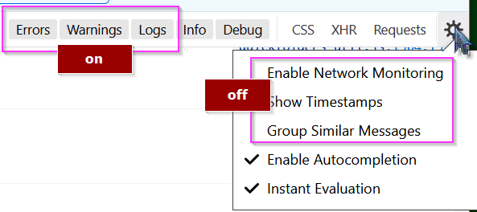
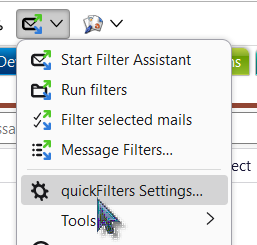
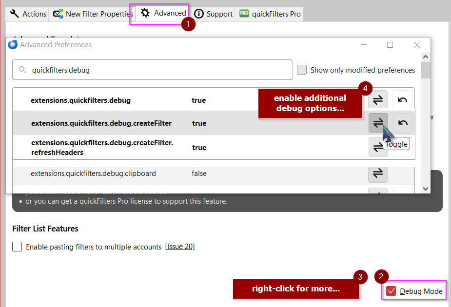
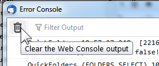
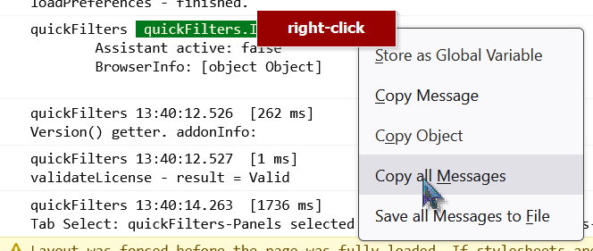

quickfilters
| Home Installation + Source Code Version History Support quickFilters! Premium Features Bugs Screenshots FiltaQuilla FiltaQuilla History Privacy Statement + Impressum |
quickFilters :: Bugs + Feature Requests
New Issue Tracker at Github
To bring issues into the 21st century (and a secure website) - you can now use our github tracker.
Up until recently, quickFilters used Bugzilla to maintain information on all bugs. With bug trackers it is relatively easy to submit a bug report or upload screen shots, you will have to create a free account with bugzilla to do this. As with a lot of the Software under the Mozilla development envelope this is also a very community driven experience, the more people contribute the better and more efficient work on future versions of quickFilters will be.
How to create a debug log (quickFilters)
-
Ctrl+Shift+J opens the error console
IMPORTANT: Configure error console as follows:
 -
If you need more information from quickFilters you can enable Debug Mode in advanced settings:
 -
On the Advanced tab 1
, activate 2
Debug Mode then right-click it 3
to get additional log options...

Depending on what you are testing, for instance when creating new filters you could enable the following additional debug options - for more detail:
extensions.quickfilters.debug.buildFilter true extensions.quickfilters.debug.createFilter true extensions.quickfilters.debug.getSourceFolder true extensions.quickfilters.debug.notifications true To find out which settings are useful for a particular issue, please contact me directly from the support tab of quickFilters.
- Now you're ready for a test - carry out whatever steps you need for reproducing your issue - the log window will fill with messages.
-
First, clear error console window:
 -
Right-click on any message, then select Copy all Messages
 - You can now paste your log results from the clipboard into your reply. Please note that plkain text error logs are far superior to screenshots, as they are much easier to read and analyze. Screenshots of the error console will only create extra work and slow down progress in fixing issues.